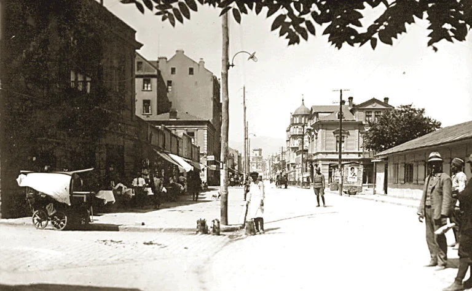

Зелено пазарче
- Производство
- УФУЖ и Документарен филм Прага
- Сценарио и режија
- Славко Јаневски и EMAN CANERA
- Година
- 1959
- Должина
- 00:18

Скопски христијански куќи - 1870 година.

Дел од старата скопска чаршија, 1902 година. Низа дуќани со кепенци пред Куршумли ан. Во заден план се гледа кулата на Ѓулшен амам.

Главната улица при своето оформување (денеска тоа е улицата "Македонија", која се протега од денешниот Музеј на град Скопје кон Камениот мост). На десната страна се гледа Католичката црква со готски архитектонски израз, како и одделни згради од левата страна. Делот од кај Камениот мост е поплочен 1911 година, за да помине султанот Мурат V, кој дошол да го посети Скопје пред неговото заминување на Косово поле.

Фотографијата е снимена од објектот на старата железничка станица - денешен Музеј на град Скопје, која била изградена во 1873 година за време на Отоманската империја. Во преден план е приодот кон железничката станица, со оградени зелени површини. Во продолжение е главната улица која води кон плоштадот. На почетокот на улицата од лева страна е хотелот "Русија".

Поглед кон главната улица "Македонија". Капијата е поставена во чест на некој важен гостин. Лево од неа е хотелот "Русија". - почеток на 20 век.

Главната улица со хотелот "Москва" - 20-тите години

Главната улица, денешна Македонија, која води од денешниот Музеј на град Скопје кон плоштадот. На крајот на улицата се гледа Офицерскиот дом, а десно од него стопанската трговска комора - 30-тите години.

Главната улица, фотографирана кон денешниот музеј на град Скопје - околу 1920 година.

Главната улица (денешна Македонија), од плоштадот кон железничката станица - околу 1920 година.

Главната улица, Македонија, од денешниот Музеј на град Скопје кон плоштадот. Од лево е хотелот Бристол, а десно се гледа Кранговата палата. (30-тите години)

Главната улица која води од денешниот музеј на град Скопје кон плоштадот. Фотографирано е кај денешниот хотел "Бристол" и Крангова палата. Во позадината се гледа Офицерскиот дом - околу 1935 година.

Главната улица која води од денешниот музеј на град Скопје кон плоштадот. Објектот на аголот е Кранговата палата - 30-тите години.

Крангова палата. - 30-тите години.

Улицата крај кејот на десната страна на р.Вардар. - 30-тите години

Улица во стариот дел на градот кон старата чаршија - крај на 19 век.

Улицата од Камениот мост кон старата чаршија. - 20-тите години

Улица во стариот дел на градот, кон маалото Чаир. Во преден план е стојалиште на пајтони и старата турска чешма. Во заден план се објекти со стара народна архитектура - 20-тите години.

Камениот мост кон старата чаршија. Од лево се низа на трговски дуќани, а од десно зградата на дентистот Д-р Рубен и низа на трговски дуќани кон старата чаршија - околу 1935 година.

Улицата "Крушевска" во Пајко маало, 20-тите години.

Оваа улица денеска не постои. Се протегала паралелно со главната улица, од плоштад кон старата железничка станица (денешен Музеј на град Скопје) - 20-тите година

Главната улица (денешна "Македонија") - 20-тите години.

Улица од старата чаршија во Скопје. Во позадина Мустафа пашина џамија. - 30-тите години

Улица во старата чаршија во Скопје. Во позадина се гледа Мустафа пашина џамија. - 30-тите години

Улицата "Цветан Димов" во населбата Чаир, 40-тите години. Во позадина се гледа Мемед паша џамија.

Скопје, 50-тите години. Влез во старата скопска чаршија - локација на стоковната куќа "Мост". Во преден план е групација на дуќани, кои се срушени по земјотресот во 1963 година. На левата страна се гледа дел од скопската тврдина - Кале. Во позадина е Мустафа пашина џамија.

Малиот плоштад во старата скопска чаршија, 50-тите години.

Улицата 11 Октомври, фотографирана од плоштадот кон денешното Собрание на Р.Македонија. Во позадина се гледа старата зграда на Управата за внатрешни работи. - 50-тите години

Улицата 11 Октомври со собранието на Р.Македонија од левата страна. На левата страна се гледа и средновековната кула. Во задниот дел на фотографијата се гледа дел од објектот на старата пошта. - крај на 50-тите години

Улицата "Гоце делчев", фотографирана од плоштадот. Во преден план лево се гледа дел од хотелот "Македонија", кој се срушил во земјотресот 1963 година. - 50-тите години

Главната улица кон плоштадот. Во преден план е Католичката црква. - 50-тите години

Главната улица во насока кон железничката станица (денешен Музеј на град Скопје). Од левата страна се гледа Католичката црква. - 50-тите години

Главната улица "Македонија", кон плоштадот.- 50-тите години

Скопје, 1950 година. Западниот дел на главната улица. На левата страна е хотелот "Москва".

Во преден план е крстосницата на улицата 11 октомври и булеварот Кочо Рацин. Десно од кулата, која е во изградба, се гледа старата војна пекара од Првата светска војна - 50-тите години

Крстосницата на булеварот Кочо Рацин и улицатата 11 Октомври. - 50-тите години

Улицата покрај Градската болница и Работничкиот универзитет - 50-тите години

Улицата 11 Октомври - крај на 70-тите, кон плоштадот "Македонија".

Поглед од улицата 11 Октомври кон плоштадот "Македонија". Од лева страна се стамбени објекти, а десно зградата на Електростопанство. - крај на 70-тите години

 Аквадукт4 разгледници
Аквадукт4 разгледници Кале30 разгледници
Кале30 разгледници Мостови60 разгледници
Мостови60 разгледници Кеј58 разгледници
Кеј58 разгледници Плоштад46 разгледници
Плоштад46 разгледници Објекти66 разгледници
Објекти66 разгледници Христијански храмови19 разгледници
Христијански храмови19 разгледници Муслимански објекти33 разгледници
Муслимански објекти33 разгледници Офицерски дом29 разгледници
Офицерски дом29 разгледници Театар28 разгледници
Театар28 разгледници Железничка станица13 разгледници
Железничка станица13 разгледници Училишта36 разгледници
Училишта36 разгледници Паркови12 разгледници
Паркови12 разгледници Пазари18 разгледници
Пазари18 разгледници Улици38 разгледници
Улици38 разгледници Панорама I60 разгледници
Панорама I60 разгледници Панорама II30 разгледници
Панорама II30 разгледници Колажи55 разгледници
Колажи55 разгледници Поплави9 разгледници
Поплави9 разгледници Земјотрес27 разгледници
Земјотрес27 разгледници Скопје 200026 разгледници
Скопје 200026 разгледници